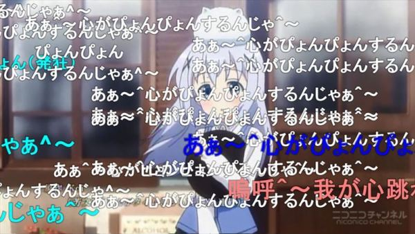

YouTube Changed In Streaming
Function Improve
The channel owner only needs to click "Initiate question and Answer activity" in the plus icon of the chat room, which is in the live broadcast control center. Then, input the subject content to initiate question and answer activity to the audience.
Questions posted by viewers will be listed in the chat room, and the streamer will be able to place the question at the top of the chat room by pressing the three-point menu icon next to the question of interest. Streamer repeats these steps to select a new question, while switching to a new topic or ending Q&A requires clicking on the question to close Q&A.
YouTube believes that "Live Q&A" enables channel owners to interact with viewers and discuss topics that are of interest to the audience, which helps to deepen relationships and expand the community.
Chat Room Culture
YouTube also offers an optional "replay chat room message" feature, which allows later- comers to drag and drop the timeline of the film to relive discussions in the chat room. In addition, the live host can also designate the chat room manager, sharing the pressure to maintain order of the audience.